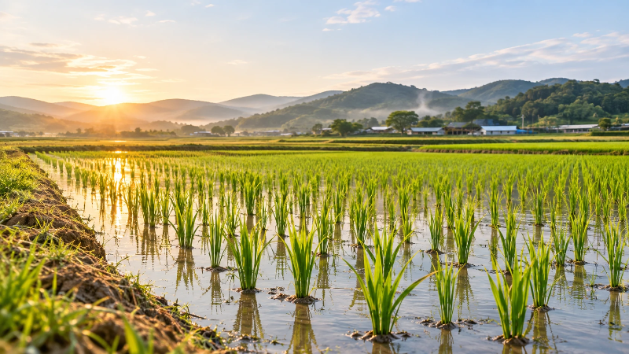
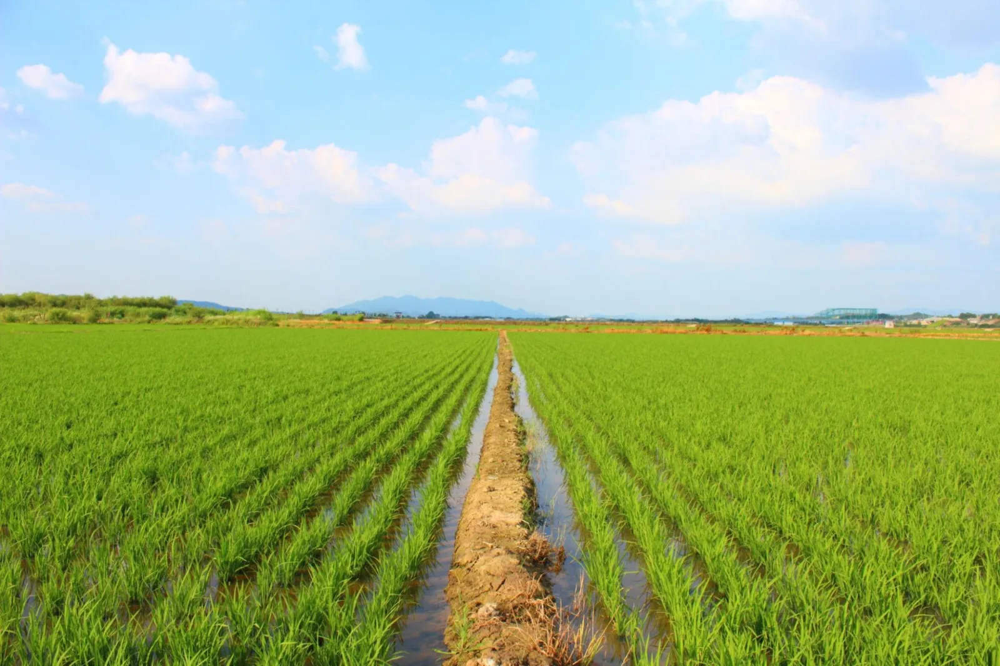
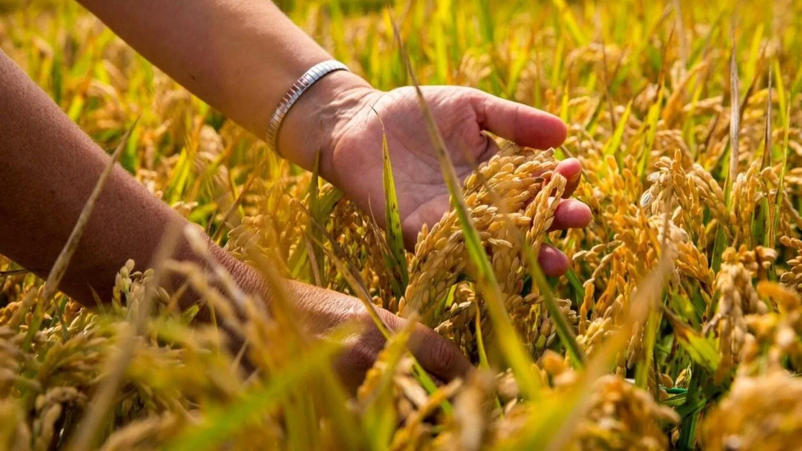
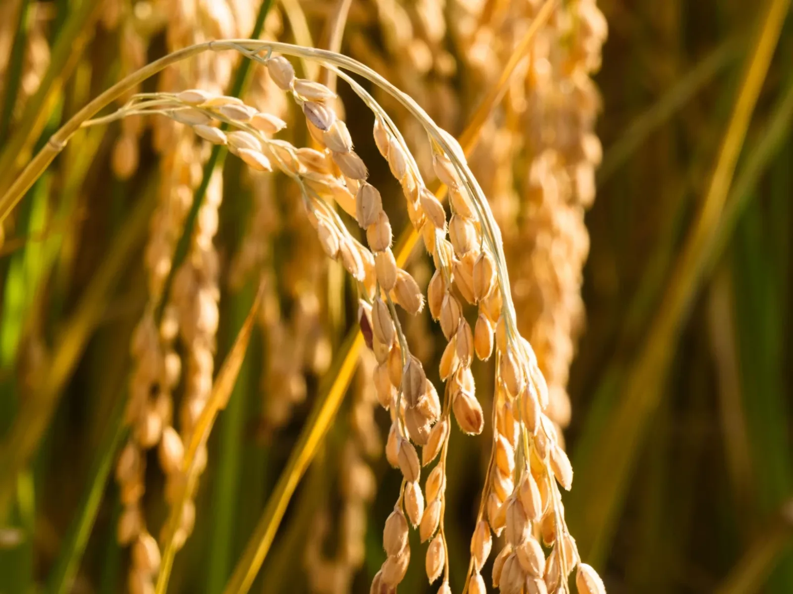
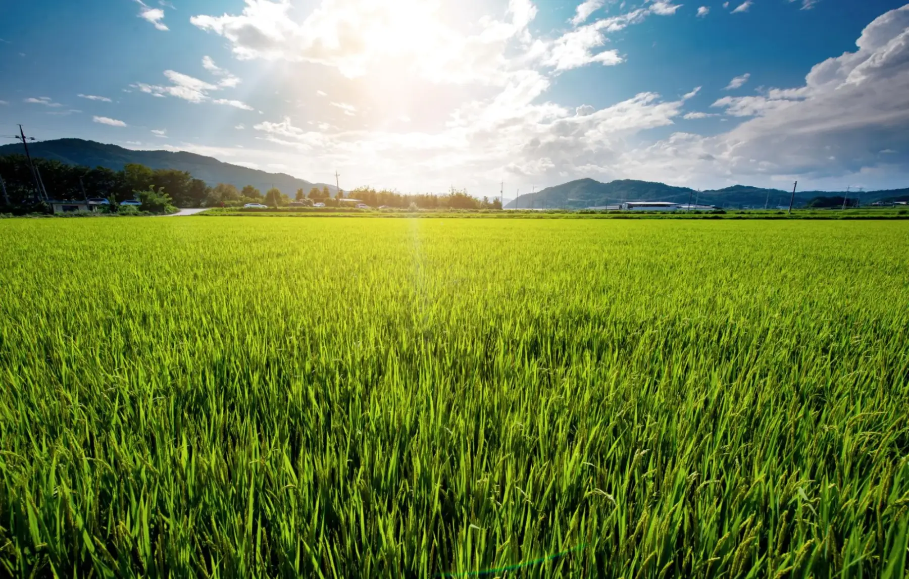
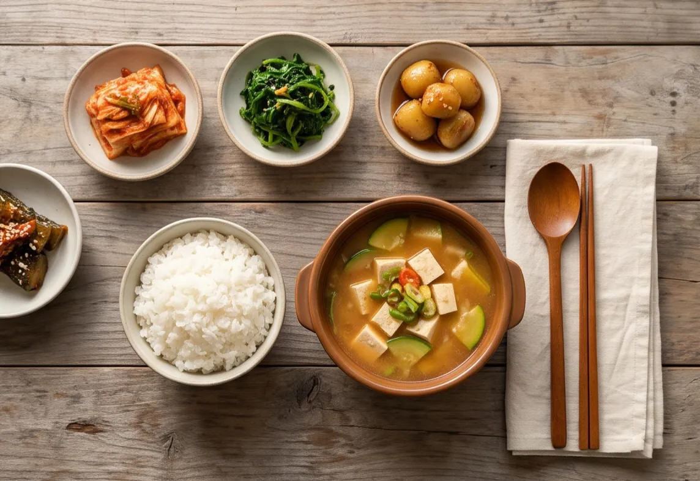

봄
논을 갈고, 볍씨를 틔워 모를 키우고, 콩을 심습니다.
ABOUT MOAON
모아온은 함께 모아 더 큰 가치를 만들고, 그 결실을 따뜻하게 나누고자 시작한 농업입니다.

‘모으다’라는 말에 사람과 경험, 기술과 농산물의 가치를 모은다는 뜻을 담았습니다.
‘온’에는 그 결실을 따뜻하게(溫) 나누고 싶은 마음을 담았습니다.
OUR BEGINNING
부모님이 오랫동안 일궈 온 논을 이어받아 농사를 짓고 있습니다.
지켜 온 땅과 쌓아 온 경험을 바탕으로 지금의 농업에 필요한 방법을 하나씩 더해 가고자 합니다.

WHAT WE GROW
전북 정읍에서 벼와 콩, 밀, 보리, 조사료를 재배합니다.

SEED FARMING
정읍 매계 채종단지를 10년 넘게 운영하며, 다른 농가가 다음 해 농사에 사용할 정부 보급종 씨앗을 생산해 왔습니다.

OUR DIRECTION
오랜 시간 농촌을 지켜 온 어르신들의 경험을 존중하고, 농업을 새롭게 시작하려는 청년과 귀농인에게 기회가 이어지기를 바랍니다.
FOUR SEASONS

논을 갈고, 볍씨를 틔워 모를 키우고, 콩을 심습니다.

모내기를 하고, 풀과 거름을 살피며, 논을 살핍니다.

벼와 콩을 거두고, 말리고, 고릅니다.

빈 논에 보리와 밀을 뿌려 다음 계절을 준비합니다.

한 해의 농사는 밥상으로 이어집니다.